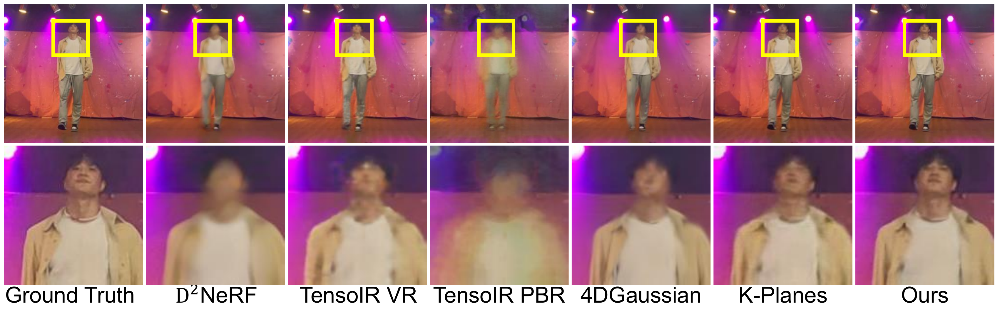
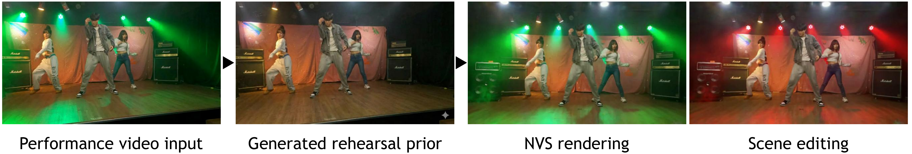

Comparisons
Quantitative Results
Novel view synthesis performance on our real-world dataset. We compare results from the original dataset and the temporally subsampled version (every 5th frame) to evaluate robustness against rapid scene dynamics.
| Method | Original Dataset | Subsampled Dataset (5x Speed) | ||||
|---|---|---|---|---|---|---|
| Full PSNR↑ | Dynamic PSNR↑ | Objects SSIM↑ | Full PSNR↑ | Dynamic PSNR↑ | Objects SSIM↑ | |
| D2NeRF | 29.776 | 22.962 | 0.978 | 28.274 | 21.899 | 0.976 |
| K-Planes | 28.113 | 25.122 | 0.981 | 27.849 | 25.784 | 0.986 |
| TensoIR PBR | 18.681 | 16.934 | 0.972 | 16.955 | 15.347 | 0.971 |
| TensoIR VR | 28.663 | 21.918 | 0.978 | 28.389 | 23.238 | 0.981 |
| 4DGaussian | 28.199 | 24.523 | 0.984 | 28.189 | 24.245 | 0.983 |
| Ours | 28.250 | 26.318 | 0.986 | 28.666 | 27.090 | 0.988 |
Comparison with Previous Works: Scene Editing & Decomposition
The goal of scene editing is to render the red-colored illumination. Only our method produces the high-quality edited scenes through the successful dynamic illumination decomposition.

Qualitative Comparison: Novel View Synthesis
Comparison of novel view synthesis performance for dynamic objects across methods.

Dynamic Region Quality
Error map comparison for dynamic regions. Our model consistently achieves superior quality with the lowest error in dynamic regions.

Without Rehearsal Prior
Without rehearsal stage videos, our pipeline enables scene editing by generating the rehearsal prior. (Nano banana is used)
